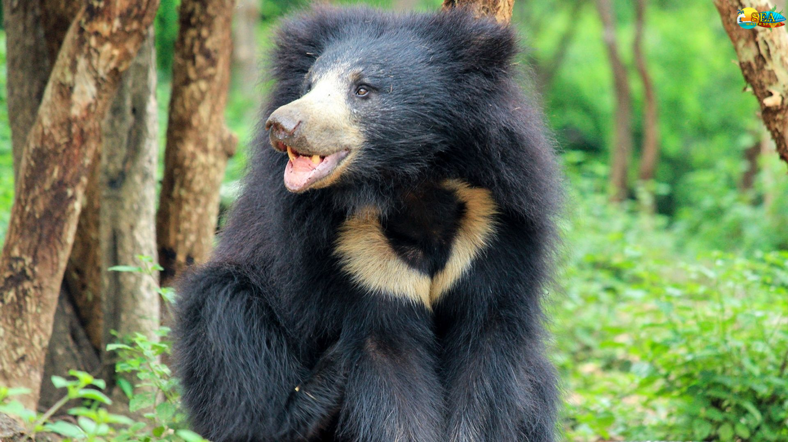

This sanctuary harbours maximum population of sloth bears in the entire state, which is the star attraction in the wilds of Ratanmahals. The sanctuary falls in the Dahod district of Central Gujarat and is located very close to the tribal towns, Baria of Dahod district and Chhota Udepur of Vadodara district. This area was declared as a wildlife sanctuary in March 1982. The sanctuary falls on the border of Gujarat with Madhya Pradesh. The actual habitat of the Sloth bear, therefore, extends into Madhya Pradesh. The pristine beauty of forests in this small tract with rugged topography gives the feel of a hill station to wildlife enthusiasts.
For learning the habits and behaviour of the sloth bear, this sanctuary offers a unique opportunity as they are densely populated here. The sanctuary also has a large population of leopards.
The forests include dry teak forests at the foothills and mixed deciduous forests with dry bamboo brakes on the periphery. There are pure patches of timru and sadad as well. The high concentration of mahuda trees provides a favourite food for sloth bears.
Ecological significance
The forests of Ratanmahals form the catchment of river Panam- a major river of Central Gujarat. It drains through the districts of Dahod and Panchmahals. These are major towns on the banks of this river. An irrigation dam and reservoir is also built on this river near Godhra. These forests, therefore, have a great ecological significance for water conservation.
The Forest Types
The forest type constitutes of different types of habitats like a dry teak forest at foothills and in the periphery of the P A, mixed deciduous forest, dry bamboo brakes, 'Timru' forest (pure patch) and 'Sadad' forest (pure patch). High population of 'Mahudo' trees intermixed with pure patches of 'Sadad' and 'Timru' forest on plateaus of the hills, at foothills, in plains on the periphery of PA provide food to sloth bear. Tree cover is very good. There are also quite a good number of 'Jamun' trees, which provide food to sloth bear during monsoon.

How to Get There?
By Road
The Nearest Towns: Sagtala (15 km), Bariya (30 km), Kheda (45 km), Dahod (60 km). The nearest bus station is Devgadh Baria (42 km).
By Train
The Nearest Railway station are: Dahod - 70 km and Godhra - 85 km.